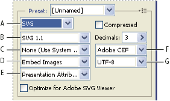

SVG optimization options (Illustrator)
SVG is a vector format that describes images as shapes, paths, text, and filter effects. The resulting files are compact and provide high-quality graphics on the web, in print, and even on resource-constrained handheld devices.

Optimization settings for SVG
- A.
- File format menu
- B.
- SVG Profiles menu
- C.
- Font Subsetting menu
- D.
- Image Location menu
- E.
- CSS Properties menu
- F.
- Font Type menu
- G.
- Encoding menu
- Compressed
- Creates a Compressed SVG (SVGZ) file.
- SVG Profiles
-
Specifies the SVG XML Document Type Definition for the exported file.
- SVG 1.0 and SVG 1.1
- Suitable for SVG files to be viewed on a desktop computer. SVG 1.1 is the full version of the SVG specification, of which SVG Tiny 1.1, SVG Tiny 1.1 Plus, and SVG Basic 1.1 are subsets.
- SVG Basic 1.1
- Suitable for SVG files to be viewed on medium powered devices, such as handhelds. Keep in mind that not all handhelds support the SVG Basic profile. As a result, selecting this option doesn’t guarantee that the SVG file will be viewable on all handhelds. SVG Basic doesn’t support nonrectangular clipping and some SVG filter effects.
- SVG Tiny 1.1 and SVG Tiny 1.1+
- Suitable for SVG files to be viewed on small devices, such as mobile phones. Keep in mind that not all mobile phones support the SVG Tiny and SVG Tiny Plus profiles. As a result, selecting either of these options doesn’t guarantee that the SVG file will be viewable on all small devices.
- SVG Tiny 1.2
-
Suitable for SVG files to be viewed on a variety of devices
ranging from PDAs and cellphones to laptops and desktop computers.
SVG Tiny doesn’t support gradients, transparency, clipping, masks, symbols, or SVG filter effects. SVG Tiny Plus includes the ability to display gradients and transparency, but it doesn’t support clipping, masks, symbols, or SVG filter effects.
 For additional
information on SVG profiles, see the SVG specification on the World
Wide Web Consortium (W3C) website (www.w3.org).
For additional
information on SVG profiles, see the SVG specification on the World
Wide Web Consortium (W3C) website (www.w3.org).
- Decimals
- Determines the precision of vector data in the SVG file. You can set a value of 1 to 7 decimal places. A high value results in a larger file size and increased image quality.
- Font Subsetting
- Controls which glyphs are embedded from the SVG file. Select None from the Subsetting menu if you can rely on the necessary fonts being installed on end-user systems. Select Only Glyphs Used to only include glyphs for text that exists in the current artwork. The other values (Common English, Common English + Glyphs Used, Common Roman, Common Roman + Glyphs Used, All Glyphs) are useful when the textual content of the SVG file is dynamic (such as server-generated text or user-interactive text).
- Font Type
-
Specifies how fonts are exported.
- Adobe CEF
- Uses font hinting for better rendering of small fonts. This font type is supported by the Adobe SVG Viewer but may not be supported by other SVG viewers.
- SVG
- Doesn’t use font hinting. This font type is supported by all SVG viewers.
- Convert To Outlines
- Converts type to vector paths. Use this option to preserve the visual appearance of type in all SVG Viewers.
- Image Location
- Specifies whether to embed or link to images. Embedding images increases file size but ensures that rasterized images are always available.
- CSS Properties
- Determines how CSS style attributes are saved in the SVG code. The default method, Presentation Attributes, applies properties at the highest point in the hierarchy, allowing the most flexibility for specific edits and transformations. The Style Attributes method creates the most readable files but may increase file size. Choose this method if the SVG code will be used in transformations—for example, transformations using XSLT (Extensible Stylesheet Language Transformation). The Entity References method results in faster rendering times and reduced SVG file size. The Style Element method is used when sharing files with HTML documents. By selecting Style Element, you can then modify the SVG file to move a style element into an external stylesheet file that is also referenced by the HTML file—however, the Style Element option also results in slower rendering speeds.
- Encoding
- Determines how characters are encoded in the SVG file. UTF (Unicode Transformation Format) encoding is supported by all XML processors. (UTF‑8 is an 8‑bit format; UTF‑16 is a 16‑bit format.) ISO 8859‑1 and UTF‑16 encoding don’t preserve file metadata.
- Optimize For Adobe SVG Viewer
- Optimizes images for Adobe SVG Viewer.